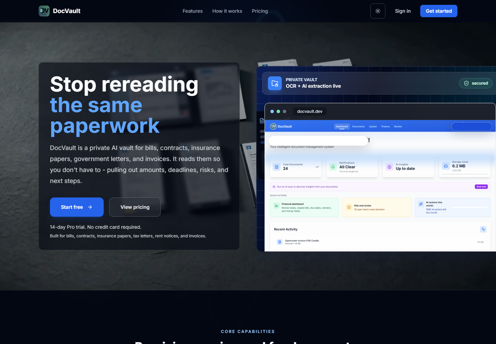
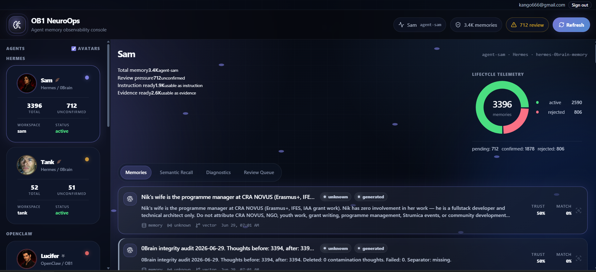
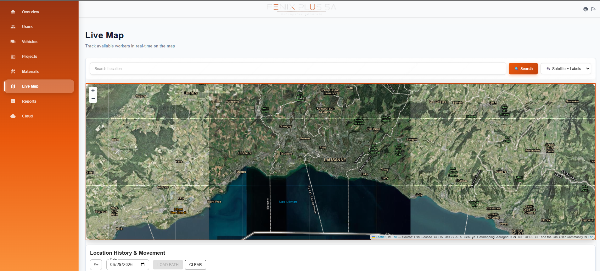
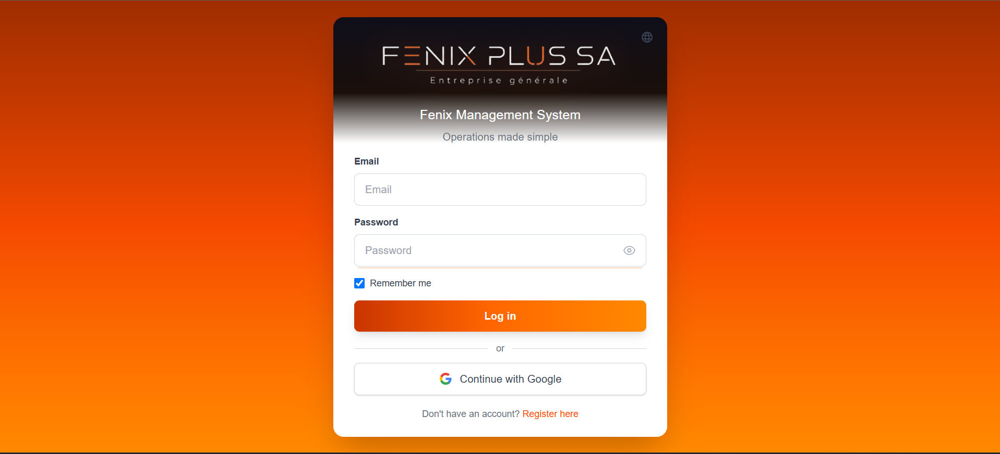

Find the workflow pressure.
Before building UI, I map where work slows down: handoffs, spreadsheet loops, document review, unclear status, missing ownership, and fragile manual checks.
I build practical AI apps, dashboards, document vaults, automations, and agent workflows that turn messy business operations into clean software people actually use.
Every screen has a job: capture the right data, expose the next action, automate the dull step, and keep the human in control where judgment matters.
The site itself now behaves like the systems I build: staged, responsive, readable, and driven by scroll position instead of static decoration.
Most teams are not blocked by ambition. They are blocked by scattered data, repeated admin work, documents nobody wants to read twice, dashboards nobody trusts, and processes held together by memory.
Before building UI, I map where work slows down: handoffs, spreadsheet loops, document review, unclear status, missing ownership, and fragile manual checks.
The output is not a demo. It is an operational surface: roles, data, documents, actions, automations, and audit trails in one place.
OCR, summarization, classification, retrieval, agents, and assisted decisions are wired into the workflow only when they reduce real work.
Custom software for people who run things: companies, teams, operators, builders, document-heavy businesses, and founders who need a working product instead of another slide deck.
Internal portals, admin panels, booking systems, job trackers, role-based workflows, and live operational views.
Private vaults that read, classify, summarize, search, and extract the details hidden inside files and forms.
Data movement, notifications, status updates, routing, exports, and repetitive work removed from the human loop.
Research, review, memory, decision support, and internal assistants that operate inside clear product boundaries.
Useful before flashy. Beautiful because the system is clear.
Permanent fixes, not workaround theater. Build the thing, verify the thing, ship the thing.
Small, sharp interfaces that turn real operations into repeatable workflows.
Real systems and product directions are framed as plates, not fake dashboard noise. When a surface is private or gated, the site says so and still explains the system honestly.

A private AI vault for bills, contracts, insurance papers, tax letters, rent notices, and invoices. The system reads, extracts, summarizes, and turns paperwork into next actions.

An observability console for agent memory: lifecycle telemetry, review queues, workspace status, avatar agents, and trust signals for deciding what memory should stay active.


A field-operations system for construction management: users, vehicles, projects, materials, reports, cloud files, and live worker location on a satellite map.
Modern web apps, databases, authentication, APIs, AI models, document processing, automations, cloud deployment, and monitoring. Chosen for the workflow, not for the trend cycle.
Operational software, portals, workflows, dashboards, and focused product surfaces.
Structured data models, integrations, auth, exports, audit trails, and durable infrastructure.
Retrieval, classification, summarization, extraction, and controlled agent workflows.
The process is direct: understand the work, design the system, build the product, automate the boring parts, then launch and improve with evidence.
Map the real workflow, not the imagined one.
Define screens, data, roles, failure states, and actions.
Implement the product with maintainable, testable surfaces.
Wire AI and automation where it reduces real manual load.
Ship, measure, fix, refine, and scale the system.
Dorian Apps can turn it into a clean, usable, AI-powered system.